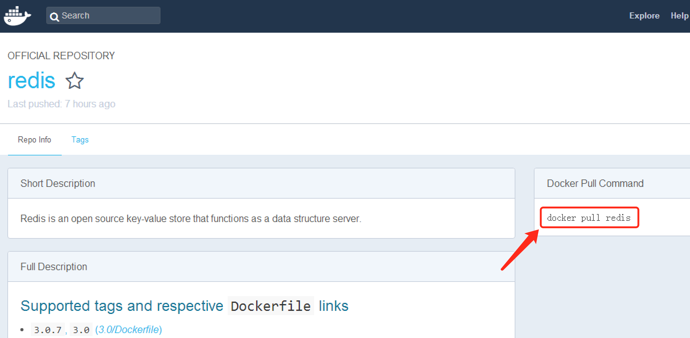
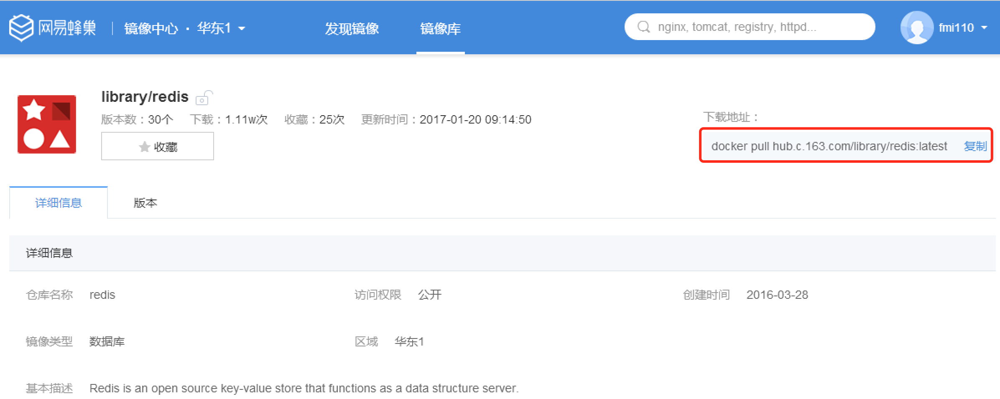

docker讲义
1 下载docker镜像
- Win10:直接使用安装包安装,下载地址:Docker v17.06
- 非win10系统使用Docker Toolbox安装,下载地址:DockerToolbox
- centOS 下载地址 : rpm包下载
2 windows下安装docker
系统要求:
- 64位系统,系统版本不能低于win7
- 开启虚拟化技术(需要在bios中设置,通常情况下都是开启的)
安装(win7下)
双击运行DockerToolbox

设置好安装目录,然后确认
在后续弹出的对话框,全部选择确认即可
安装过程中会提示程序需要修改环境变量,或者安装一些驱动时,需要全部选择确认
验证安装
运行客户终端
Docker QuickStart Terminal,当出现$时,说明程序初始化完成
输入指令
docker run hello-world,并回车,当程序能正确运行后,控制台可以看到如下的类似信息x$ docker run hello-worldUnable to find image 'hello-world:latest' locallyPulling repository hello-world91c95931e552: Download completea8219747be10: Download completeStatus: Downloaded newer image for hello-world:latestHello from Docker.This message shows that your installation appears to be working correctly.To generate this message, Docker took the following steps:1. The Docker Engine CLI client contacted the Docker Engine daemon.2. The Docker Engine daemon pulled the "hello-world" image from the Docker Hub.(Assuming it was not already locally available.)3. The Docker Engine daemon created a new container from that image which runs theexecutable that produces the output you are currently reading.4. The Docker Engine daemon streamed that output to the Docker Engine CLI client, which sent itto your terminal.To try something more ambitious, you can run an Ubuntu container with:$ docker run -it ubuntu bashFor more examples and ideas, visit:https://docs.docker.com/userguide/
3 CentOS 7 下安装Docker
安装版本 : Docker CE
系统要求 : 64 bit CentOS 7
1 安装前准备
卸载旧版的 docker , 输入下列指令
xxxxxxxxxx[root@localhost /]# sudo yum remove docker docker-common docker-selinux docker-engin已加载插件：fastestmirror, langpacks参数 docker 没有匹配参数 docker-common 没有匹配参数 docker-selinux 没有匹配参数 docker-engin 没有匹配不删除任何软件包2 在线仓库安装
执行下面的指令更新依赖的包
xxxxxxxxxx[root@localhost /]# sudo yum install -y yum-utils device-mapper-persistent-data lvm2
会联网更新系统的依赖 , 需要一些时间
设置 docker 仓库地址地址
xxxxxxxxxx[root@localhost /]# sudo yum-config-manager --add-repo https://download.docker.com/linux/centos/docker-ce.repo已加载插件：fastestmirror, langpacksadding repo from: https://download.docker.com/linux/centos/docker-ce.repograbbing file https://download.docker.com/linux/centos/docker-ce.repo to /etc/yum.repos.d/docker-ce.reporepo saved to /etc/yum.repos.d/docker-ce.repo更新
yum包的索引xxxxxxxxxx[root@localhost /]# sudo yum makecache fast已加载插件：fastestmirror, langpacksbase | 3.6 kB 00:00:00docker-ce-stable | 2.9 kB 00:00:00extras | 3.4 kB 00:00:00updates | 3.4 kB 00:00:00docker-ce-stable/x86_64/primary_db | 6.8 kB 00:00:01Loading mirror speeds from cached hostfile* base: mirror.bit.edu.cn* extras: mirror.lzu.edu.cn* updates: mirrors.cn99.com元数据缓存已建立安装最新版本的
docker-cexxxxxxxxxx[root@localhost /]# sudo yum install docker-ce
1 可以通过
sudo yum list docker-ce.x86_64 --showduplicates | sort -r来查看安装包列表2 通过
sudo yum install dokcer-ce-<VERSION>来安装指定的版本
启动
dockerxxxxxxxxxx[root@localhost /]# systemctl start docker
CentOS 7 使用了新的命令
systemctl来替代service
运行
hello-world镜像 , 验证 docker 是否安装成功xxxxxxxxxx[root@localhost /]# docker run hub.c.163.com/library/hello-world:latestUnable to find image 'hub.c.163.com/library/hello-world:latest' locallylatest: Pulling from library/hello-world7a9d05de7670: Pull completeDigest: sha256:7391d42f476e10480a3da94f15233703f6c6abcd9b5165e390121f867039a6dfStatus: Downloaded newer image for hub.c.163.com/library/hello-world:latestHello from Docker!This message shows that your installation appears to be working correctly.To generate this message, Docker took the following steps:1. The Docker client contacted the Docker daemon.2. The Docker daemon pulled the "hello-world" image from the Docker Hub.3. The Docker daemon created a new container from that image which runs theexecutable that produces the output you are currently reading.4. The Docker daemon streamed that output to the Docker client, which sent itto your terminal.To try something more ambitious, you can run an Ubuntu container with:$ docker run -it ubuntu bashShare images, automate workflows, and more with a free Docker ID:https://cloud.docker.com/For more examples and ideas, visit:https://docs.docker.com/engine/userguide/
出现上面的信息后,就说明dokcer 安装成功了, 可以使用
docker version来查看当前docker的版本信息
4 Docker镜像
Docker运行容器前需要本地存在对应的镜像,如果没有,docker会尝试从默认镜像仓库中进行下载(Docker Hub仓库),用户也可以配置使用自定义的仓库
docker的官方镜像仓库地址
网易蜂巢镜像中心

1 拉取镜像
命令行格式: docker pull NAME[:TAG]
其中 NAME : 镜像仓库的名称,用于区分镜像
TAG : 镜像的标签,用来指定版本号

从官网仓库拉取redis镜像
xxxxxxxxxxdocker pull redis 等效于 docker pull redis[:latest]如果不指定
tag,会默认选择latest标签,即最新版本的镜像从网易蜂巢拉取redis镜像
xxxxxxxxxxdocker pull hub.c.163.com/library/redis:latest

非官网的镜像地址,需要在镜像仓库名称前指定完整的仓库地址
下面是从蜂巢拉取redis时的输出信息:
xxxxxxxxxxhuangyunningdeMacBook-Pro:~ huangyunning$ docker pull hub.c.163.com/library/redis:latestlatest: Pulling from library/redis5040bd298390: Pull complete 996f41e871db: Pull complete a40484248761: Pull complete a97af2bf2ee7: Pull complete 010c454d55e5: Pull complete 142d4cb3dc08: Pull complete 6666ac0e527e: Pull complete Digest: sha256:75b4b101bdb98475e8acf8410bef7f1a47fa5de1c22ed629c77ce37491cca68eStatus: Downloaded newer image for hub.c.163.com/library/redis:latest可以看到镜像由一系列层(layer)组成,
5040bd...类似的字符串是各个层的唯一标识符,非常类似Git仓库中的commit镜像默认存储在
/var/lib/docker路径下 , 该路径也可以使用docker daemon -g参数在启动Daemon时指定
2 查看镜像信息
1 命令images列出本地镜像
xxxxxxxxxxdocker images如下
xxxxxxxxxxhuangyunningdeMacBook-Pro:~ huangyunning$ docker imagesREPOSITORY TAG IMAGE ID CREATED SIZEhello-world latest 1815c82652c0 4 weeks ago 1.84 kBhub.c.163.com/library/redis latest 45c3ea2cecac 5 months ago 183 MBREPOSITORY 说明镜像来源的仓库
TAG 说明版本号信息,latest指最新版
IMAGE ID 镜像的唯一ID
关于images更多的命令选项,可以输入 man docker -images查看
2 命令tag给镜像添加别名
docker tag 本地镜像名 tag标签名
如下: docker tag hub.c.163.com/library/redis redis163
xxxxxxxxxxhuangyunningdeMacBook-Pro:~ huangyunning$ docker imagesREPOSITORY TAG IMAGE ID CREATED SIZEhello-world latest 1815c82652c0 4 weeks ago 1.84 kBhub.c.163.com/library/redis latest 45c3ea2cecac 5 months ago 183 MBhuangyunningdeMacBook-Pro:~ huangyunning$ docker tag hub.c.163.com/library/redis redis163 huangyunningdeMacBook-Pro:~ huangyunning$ docker imagesREPOSITORY TAG IMAGE ID CREATED SIZEhello-world latest 1815c82652c0 4 weeks ago 1.84 kBredis163 latest 45c3ea2cecac 5 months ago 183 MBhub.c.163.com/library/redis latest 45c3ea2cecac 5 months ago 183 MB可以看到 redis163 和 hub.c.163.com/library/redis 两个镜像的 ID 是一样的,也就是说,以后用户可以直接使用 redis163 这个镜像表示 hub.c.163.com/library/redis
3 命令inspect查看镜像信息
格式 : docker inspect 镜像仓库名称
xxxxxxxxxxhuangyunningdeMacBook-Pro:~ huangyunning$ docker inspect redis163[ { "Id": "sha256:45c3ea2cecac5fef8c3838cc4b58666657df8541e14437964c8b88f355f372c8", "RepoTags": [ "redis163:latest", "hub.c.163.com/library/redis:latest" ], "RepoDigests": [ "hub.c.163.com/library/redis@sha256:75b4b101bdb98475e8acf8410bef7f1a47fa5de1c22ed629c77ce37491cca68e" ], "Parent": "", "Comment": "", "Created": "2017-01-17T20:06:29.296031465Z", "Container": "82f00fae041be8793ea75122705fb1730ea9df8ef1cc9a28c654396cbded9b72", 省略一堆信息 "RootFS": { "Type": "layers", "Layers": [ "sha256:a2ae92ffcd29f7ededa0320f4a4fd709a723beae9a4e681696874932db7aee2c", "sha256:387483b2c71541ea1f25f0e4f1d120f3306abdfb1aca8868f1d0fbb63cd932d1", "sha256:307248831acaa33a836f172d5cf821baf5fa0f9e475d9a3d83fe62d80c6be517", "sha256:c235d5b4caa380ee5a45fdd5e561335eca40f5842dfabe263a89ef1fdd54557c", "sha256:af287523a42a540ca038b875cd4239687ee7d89cd6793da2a060797afba001e5", "sha256:552b670af77417fd1c21c6bd111079b2d073669118568b19cd1898f8aa50823d", "sha256:4cefd98bbdaf8adc050c0028f0a3c0af5f868dbb2a513b06bc48d087f5706fd7" ] } }] 返回的信息是一个json字符串,如果只想查看某个节点的信息可以添加 -f {{".节点名"}},如,只看 Id 节点的信息的命令为 docker inspect redis163 -f {{".Id"}}
xxxxxxxxxxhuangyunningdeMacBook-Pro:~ huangyunning$ docker inspect redis163 -f {{".Id"}}sha256:45c3ea2cecac5fef8c3838cc4b58666657df8541e14437964c8b88f355f372c84 命令 search搜索镜像
格式: docker search 镜像仓库名
xxxxxxxxxxhuangyunningdeMacBook-Pro:~ huangyunning$ docker search nginxNAME DESCRIPTION STARS OFFICIAL AUTOMATEDnginx Official build of Nginx. 6403 [OK] jwilder/nginx-proxy Automated Nginx reverse proxy for docker c... 1063 [OK]richarvey/nginx-php-fpm Container running Nginx + PHP-FPM capable ... 405 [OK]jrcs/letsencrypt-nginx-proxy-companion LetsEncrypt container to use with nginx as... 199 [OK]kong Open-source Microservice & API Management ... 87 [OK] webdevops/php-nginx Nginx with PHP-FPM 85 [OK]3 删除镜像
docker rm $(docker ps -q -a)一次性删除所有的容器
docker rmi $(docker images -q)一次性删除所有的镜像
使用标签删除镜像
格式 :
docker rmi IMAGE [IMAGE2 IMAGE3...],其中IMAGE可以为标签tag或镜像IDxxxxxxxxxxhuangyunningdeMacBook-Pro:~ huangyunning$ docker imagesREPOSITORY TAG IMAGE ID CREATED SIZEhello-world latest 1815c82652c0 4 weeks ago 1.84 kBhub.c.163.com/library/redis latest 45c3ea2cecac 5 months ago 183 MBredis163 latest 45c3ea2cecac 5 months ago 183 MBhuangyunningdeMacBook-Pro:~ huangyunning$ docker rmi redis163Untagged: redis163:latesthuangyunningdeMacBook-Pro:~ huangyunning$ docker imagesREPOSITORY TAG IMAGE ID CREATED SIZEhello-world latest 1815c82652c0 4 weeks ago 1.84 kBhub.c.163.com/library/redis latest 45c3ea2cecac 5 months ago 183 MB可以看到,当通过标签tag删除时,如果镜像文件有多个标签时,之后删除标签,镜像文件并没有被删除,当只有一个标签时,镜像才会被删除
使用镜像ID删除镜像
xxxxxxxxxxhuangyunningdeMacBook-Pro:~ huangyunning$ docker imagesREPOSITORY TAG IMAGE ID CREATED SIZEhello-world latest 1815c82652c0 4 weeks ago 1.84 kBhub.c.163.com/library/redis latest 45c3ea2cecac 5 months ago 183 MBhuangyunningdeMacBook-Pro:~ huangyunning$ docker rmi 1815c82652c0Untagged: hello-world:latestUntagged: hello-world@sha256:f3b3b28a45160805bb16542c9531888519430e9e6d6ffc09d72261b0d26ff74fDeleted: sha256:1815c82652c03bfd8644afda26fb184f2ed891d921b20a0703b46768f9755c57Deleted: sha256:45761469c965421a92a69cc50e92c01e0cfa94fe026cdd1233445ea00e96289ahuangyunningdeMacBook-Pro:~ huangyunning$ docker imagesREPOSITORY TAG IMAGE ID CREATED SIZEhub.c.163.com/library/redis latest 45c3ea2cecac 5 months ago 183 MB根据ID删除时,系统会尝试删除所有指向该镜像的标签,然后删除该镜像文件本身
注意,如果存在使用了该镜像创建的容器时,镜像的本身文件将无法删除,此时需要先删除容器
查看本地上的容器命令为
docker ps -a 删除指定容器 的命令为
docker rm 容器ID 强制删除(慎用)
docker rmi -f 容器
4 创建镜像
创建的镜像由3种方法:
- 基于已有镜像的容器创建
- 基于本地模板导入
- 基于
Dockerfile创建
1 基于已有镜像的容器创建
格式 : docker commit [OPTION] CONTAINER [RESPOSITORY[:TAG]]
OPTION 的常用选项如下:
-a 作者信息 -c 提交时执行的 Dockerfile命令 -m 提交时的备注信息 p 提交时暂停容器运行
下面演示该命令创建一个镜像,首先先从蜂巢中心下载一个ubuntu镜像,并给镜像起标签叫 ubuntu ,如下
xxxxxxxxxxhuangyunningdeMacBook-Pro:~ huangyunning$ docker pull hub.c.163.com/library/ubuntu:latestlatest: Pulling from library/ubuntu... 省略信息 ...Digest: sha256:951b9b6a22f7d7fc98854bcda15c2bc950788c2846c25ffa740d3efd86ec132eStatus: Downloaded newer image for hub.c.163.com/library/ubuntu:latesthuangyunningdeMacBook-Pro:~ huangyunning$ docker tag hub.c.163.com/library/ubuntu ubuntuhuangyunningdeMacBook-Pro:~ huangyunning$ docker imagesREPOSITORY TAG IMAGE ID CREATED SIZEubuntu latest d355ed3537e9 3 weeks ago 119 MBhub.c.163.com/library/ubuntu latest d355ed3537e9 3 weeks ago 119 MBhub.c.163.com/library/redis latest 45c3ea2cecac 5 months ago 183 MB 然后,启动ubuntu镜像,并在其中添加一个文件叫 itheima.txt ,然后退出
xxxxxxxxxxhuangyunningdeMacBook-Pro:~ huangyunning$ docker run -it ubuntu /bin/bashroot@8e5d88c09922:/# lsbin boot dev etc home lib lib64 media mnt opt proc root run sbin srv sys tmp usr varroot@8e5d88c09922:/# touch itheima.txtroot@8e5d88c09922:/# lsbin boot dev etc home itheima.txt lib lib64 media mnt opt proc root run sbin srv sys tmp usr varroot@8e5d88c09922:/# exitexit >
root@8e5d88c09922中的8e5d88c09922即为当前容器的ID,创建新镜像时需要使用到
接下来,使用 docker commit创建新的镜像
xxxxxxxxxxhuangyunningdeMacBook-Pro:~ huangyunning$ docker commit -m "添加了文件itheima.txt" -a "蜂蜜110" 8e5d88c09922 test:0.1sha256:c4cf9109cee7b7a3ab7a27d0c8cffe3c07b731411c78735ec35863e6874eeb99 当返回新镜像的ID信息时,说明创建成功,可以使用 docker images 查看
xxxxxxxxxxhuangyunningdeMacBook-Pro:~ huangyunning$ docker imagesREPOSITORY TAG IMAGE ID CREATED SIZEtest 0.1 c4cf9109cee7 21 seconds ago 119 MBubuntu latest d355ed3537e9 3 weeks ago 119 MBhub.c.163.com/library/ubuntu latest d355ed3537e9 3 weeks ago 119 MBhub.c.163.com/library/redis latest 45c3ea2cecac 5 months ago 183 MB可以看到最新创建的 test 镜像
2 基于本地模板导入(了解)
格式 : docker import [OPTION] 文件名|URL|- [REPOSITORY[:TAG]]
即导入模板镜像,模板可以是从OpenVZ提供的模板,或者使用导出的镜像制作成的模板.OpenVZ模板下载地址
3 基于Dockerfile创建
>待完善
5 保存和载入镜像
1 保存镜像
格式 : docker save 本地镜像名 > 保存的全路径 , 其中 >是重定向符,指定文件输出
或者 docker save -o 本地镜像名 保存的全路径
xxxxxxxxxxhuangyunningdeMacBook-Pro:~ huangyunning$ docker save hello-world > /Users/huangyunning/temp/hello-word.tarhuangyunningdeMacBook-Pro:~ huangyunning$ ls -l /Users/huangyunning/temp/hello-word.tar-rw-r--r-- 1 huangyunning staff 12800 7 13 12:36 /Users/huangyunning/temp/hello-word.tar此时在
/Users/huangyunning/temp目录下即可看到导出的镜像hello-world.tar
2 载入镜像
格式 : docker load --input 镜像名 或者 docker load < 镜像名
如下,先删除 hello-world镜像,然后再导入之前保存的镜像
xxxxxxxxxxhuangyunningdeMacBook-Pro:~ huangyunning$ docker rmi hello-worldUntagged: hello-world:latestDeleted: sha256:1815c82652c03bfd8644afda26fb184f2ed891d921b20a0703b46768f9755c57Deleted: sha256:45761469c965421a92a69cc50e92c01e0cfa94fe026cdd1233445ea00e96289ahuangyunningdeMacBook-Pro:~ huangyunning$ docker imagesREPOSITORY TAG IMAGE ID CREATED SIZEtest 0.1 c4cf9109cee7 44 minutes ago 119 MBubuntu latest d355ed3537e9 3 weeks ago 119 MBhub.c.163.com/library/ubuntu latest d355ed3537e9 3 weeks ago 119 MBhub.c.163.com/library/redis latest 45c3ea2cecac 5 months ago 183 MBhuangyunningdeMacBook-Pro:~ huangyunning$ docker load < /Users/huangyunning/temp/hello-word.tar45761469c965: Loading layer [==================================================>] 3.584 kB/3.584 kBLoaded image: hello-world:latest3 上传镜像
上传到Docker Hub(官方仓库)
xxxxxxxxxx docker push NAME[:TAG]1 要上传镜像到Docker Hub,需要去官网注册帐号,在执行推送镜像命令时,系统会提示输入帐号密码;或者在执行推送前,先在命令行窗口使用帐号登录
2 命令行登录的指令:
docker login -u=username -p=password3 上传镜像到
Docker hub,需要自备梯子翻墙...
上传到指定仓库:先使用docker tag给自己的镜像起个标签,然后上传.标签的格式 : 指定仓库地址:端口号/仓库名
xxxxxxxxxx docker push 仓库ip地址:端口号/ NAME[:TAG] 例如: docker push 192.168.45.100:8888/hello-world:latest5 Docker容器
容器是Docker的另一个核心概念,简单的说容器可以认为是镜像的一个运行实例.不同的是,镜像是静态的文件,而容器带有运行时需要的可写文件层.可以认为Docker容器就是一个独立运行的一个(或一组)应用,以及他们必需的运行环境
容器的操作:
- 创建容器
- 启动容器
- 终止容器
- 进入容器
- 删除容器
- 容器的导入导出
1 创建容器
命令 : docker create ,例如
xxxxxxxxxxhuangyunningdeMacBook-Pro:~ huangyunning$ docker images #查看系统上的镜像REPOSITORY TAG IMAGE ID CREATED SIZEtest 0.1 c4cf9109cee7 7 hours ago 119 MBubuntu latest d355ed3537e9 3 weeks ago 119 MBhuangyunningdeMacBook-Pro:~ huangyunning$ docker create -it ubuntu #使用ubuntu镜像创建一个容器72ea1222c4e11e29baa4c4866d19bf1b4aac389aedc0ea44ea46c88fb32e1c3e #返回创建的容器的idhuangyunningdeMacBook-Pro:~ huangyunning$ docker ps -a #查看所有的容器CONTAINER ID IMAGE COMMAND CREATED STATUS PORTS NAMES72ea1222c4e1 ubuntu "/bin/bash" 5 seconds ago Created admiring_mcnulty
-it是选项-i-t的合并写法
-i让容器的标准输入保持打开
-t让Docker分配一个伪终端(pseudo-tty)并绑定倒容器的标准输入流上
create命令和后面讲到的run命令支持的选项很复杂,包括如下几个大类:
与容器运行模式相关的
-d,--detach=true|false是否是后台运行的容器,默认false-i,--interactive=true|false保持标准输入打开,默认false-t,--tty=true|false是否分配一个伪终端,默认false--net="bridge|host|none.."指定容器的网络模式,默认bridge桥接-p指定端口映射,例如-p 11234-12234:1234-2234--restart="no|always|.."容器的重启策略,包括no,on-failure[:max-retry],always,unless-stopped等-w,--workdir=""容器内的默认工作目录-v|--volumn[=[[host-dir:]container-dir[:OPTIONS]]]挂载主机上的文件卷到容器
与容器和环境配置相关的
--device=[]映射物理机上的设备到容器内-e,--env=[]指定容器内的环境变量-h,--hostname=""指定容器内的主机名--ip指定容器的IPv4地址--name=""指定容器的别名与容器资源限制和安全保护相关的
cpu-shares=0允许容器使用cpu资源的相对权重,默认是一个容器能用满一个核的cpucpu-period=0限制容器在CFS调度器下的cpu占用时间片--pid-limit=""限制容器的pid个数--privileged=true|false是否给容器分配高权限,一般不推荐--oom-kill-disable=true|false内存耗尽时,是否杀死容器以上只是部分选项,更多选项信息请查看相关文档
2 启动容器
格式 : docker start 容器ID
xxxxxxxxxxhuangyunningdeMacBook-Pro:~ huangyunning$ docker ps -a #查看本地的容器CONTAINER ID IMAGE COMMAND CREATED STATUS PORTS NAMES72ea1222c4e1 ubuntu "/bin/bash" 3 hours ago Created admiring_mcnultyhuangyunningdeMacBook-Pro:~ huangyunning$ docker start 72ea1222c4e1 #根据容器ID启动容器72ea1222c4e13 新建并启动容器
格式: docker run IMAGE
>该命令等价于 先执行 `docker create` 然后执行 `docker start`
下面的命令输出 'Hello Docker~~' ,然后容器自动终止
xxxxxxxxxxhuangyunningdeMacBook-Pro:~ huangyunning$ docker run ubuntu /bin/echo 'Hello Docker~~'Hello Docker~~ 后台执行 docker run的标准操作包括:
1 检查本地是否存在指定的镜像,不存在就从共有仓库下载;
2 使用镜像创建容器并启动
3 分配一个文件系统给容器,并在只读的镜像层外面挂载一层可读写层
4 从宿主主机配置的网桥接口中桥接一个虚拟接口到容器
5 从网桥的地址池配置一个IP地址给容器
6 执行用户指定的应用程序
7 执行完毕后容器自动终止
下面的命令 docker run -it ubuntu /bin/bash 启动一个bash终端,并允许用户进行交互
xxxxxxxxxxhuangyunningdeMacBook-Pro:~ huangyunning$ docker run -it ubuntu /bin/bash root@b6f00c07dc74:/# pwd # 查看容器内的当前目录/root@b6f00c07dc74:/# ls # 查看当前目录下的文件bin boot dev etc home lib lib64 media mnt opt proc root run sbin srv sys tmp usr varroot@b6f00c07dc74:/# ps # 查看容器运行的进程,可以看到只运行了 bash 应用 PID TTY TIME CMD 1 pts/0 00:00:00 bash 10 pts/0 00:00:00 ps root@b6f00c07dc74:/# exit # 使用 exit 退出容器 或者 ctrl + dexithuangyunningdeMacBook-Pro:~ huangyunning$ docker ps -a # 查看容器,可以看到 exit 后,容器就属于Exited 状态了CONTAINER ID IMAGE COMMAND CREATED STATUS PORTS NAMESb6f00c07dc74 ubuntu "/bin/bash" 9 minutes ago Exited (0) About a minute ago cocky_heyrovskyb8540a349de3 ubuntu "/bin/echo 'Hello ..." 19 minutes ago Exited (0) 19 minutes ago elastic_ardinghelli选项
-i让容器的标准输入保持打开
-t让Docker分配一个为终端并绑定到容器的标准输入上
某些情况下, docker run会出错,常见的错误代码如下:
- 125 : Docker daemon 执行出错,例如指定了不支持的Docker命令参数
- 126 : 指定的命令无法执行,例如权限出错
- 127 : 容器内命令无法找到
4 守护态运行
即在后台运行,此时通过添加参数 -d 即可,例如 如下指令让执行循环,不断打印 "hello itheima~"
xxxxxxxxxxhuangyunningdeMacBook-Pro:~ huangyunning$ docker run -d ubuntu /bin/sh -c "while true;do echo Hello itheima~;sleep 1; done" # 后台执行命令8a39c510e073062cc6827a1531f9611470594bdf19a31717305f4bdf46d2163dhuangyunningdeMacBook-Pro:~ huangyunning$ docker ps # 查看运行的进程CONTAINER ID IMAGE COMMAND CREATED STATUS PORTS NAMES8a39c510e073 ubuntu "/bin/sh -c 'while..." 7 seconds ago Up 6 seconds elegant_joliothuangyunningdeMacBook-Pro:~ huangyunning$ docker logs 8a39c510e073 # 查看容器的输出信息Hello itheima~Hello itheima~Hello itheima~Hello itheima~当容器在后台运行时,要查看容器的输出信息可使用
docker logs 容器ID查看
/bin/sh -c "argument"传递一个字符串参数给sh
5 终止容器
格式 : docker stop [-t|--time[=10]] [container ...]
该命令向容器发送SIGTERM信号,超时一段时间(默认10s)后 ,再发送SIGKILL信号终止容器
当容器中指定的应用终结时,容器也会自动终止.
`docker restart` 会将容器先终止然后再启动
docker ps -qa 可以查看所有容器的ID,例如
xxxxxxxxxxhuangyunningdeMacBook-Pro:~ huangyunning$ docker ps -qa8a39c510e073390e29955b4092a7488944b9c74758fa80b56 进入容器
当使用 -d使容器在后台运行时,用户无法看到容器中的信息,也无法进行操作,这个时候需要特定的方法进入容器的内部.
这里介绍命令 exec
exec是Docker从1.3.0版本起提供的命令,可以在容器内直接执行任意命令,命令格式
xxxxxxxxxxdocker exec [-d] [--detach-keys[=[]]] [-i] [--privileged] [-t] [-u|--user[=USER]] container COMMAND [ARG...] 或者# docker exec [OPTIONS] CONTAINER COMMAND [ARG...] 比较重要的参数:
-i,--interactive=true|false打开标准输入接受用户输入的命令,默认为false
--privileged=true|false是否以高权限执行命令,默认为false
-t,--tty=true|false是否分配伪终端,默认false
-u,--user=""执行命令的用户名或ID
如下命令,以守护态启动容器并启动一个bash后,通过 exec进入容器内部
xxxxxxxxxxhuangyunningdeMacBook-Pro:~ huangyunning$ docker run -d ubuntu /bin/bash #守护态启动容器f3459c54e600cb69e9d61e9c82231825fa122cd05c5d694f58451eee30c1997fhuangyunningdeMacBook-Pro:~ huangyunning$ docker psCONTAINER ID IMAGE COMMAND CREATED STATUS PORTS NAMES8a39c510e073 ubuntu "/bin/sh -c 'while..." 22 minutes ago Up 22 minutes elegant_joliothuangyunningdeMacBook-Pro:~ huangyunning$ docker exec -it 8a39c510e073 /bin/sh# !!这里是打开的终端7 删除容器
docker rm 该命令用来删除处于终止或退出状态的容器,命令格式如下:
xxxxxxxxxxdocker rm [-f] [-l] [-v] container [container ...] 主要的选项:
-f,--force=false是否强制终止并删除容器
-l,--link=false删除容器的连接,但保留容器
-v,--volumes=false删除容器挂载的数据卷
docker rm $(docker ps -qa) 一次性删除所有的容器
docker rm -f $(docker ps -qa) 强制一次性删除所有的容器
8 导入和导出容器
1 导出容器
命令格式: docker export CONTAINER [-o|--output[=""]] 或者 docker export CONTAINER > 输出路径
如下命令,先查看容器的ID,然后通过导出容器
xxxxxxxxxxhuangyunningdeMacBook-Pro:~ huangyunning$ docker ps -a # 查看本地的容器CONTAINER ID IMAGE COMMAND CREATED STATUS PORTS NAMESf78792b62156 hello-world "/hello" 7 seconds ago Exited (0) 6 seconds ago flamboyant_bassihuangyunningdeMacBook-Pro:~ huangyunning$ docker export f78792b62156 -o ~/temp/hello-world-bak # 导出容器huangyunningdeMacBook-Pro:~ huangyunning$ ls -l ~/temp/hello-world-bak # 查看导出的容器文件-rw------- 1 huangyunning staff 9728 7 14 00:09 /Users/huangyunning/temp/hello-world-bak2 导入容器
命令格式:
docker import [-c|--change[=[]]] [-m|--message=[MESSAGE]] file|URL|[REPOSITORY[:TAG]]
-c,--change=[]选项在导入的同时执行对容器进行修改的Dockerfile指令
如下命令将刚才备份的容器导入:
xxxxxxxxxxhuangyunningdeMacBook-Pro:~ huangyunning$ docker images # 查看已经存在的镜像REPOSITORY TAG IMAGE ID CREATED SIZEhub.c.163.com/library/ubuntu latest d355ed3537e9 3 weeks ago 119 MBhello-world latest 1815c82652c0 4 weeks ago 1.84 kBhub.c.163.com/library/redis latest 45c3ea2cecac 5 months ago 183 MBhuangyunningdeMacBook-Pro:~ huangyunning$ docker import ~/temp/hello-world-bak hw-bak # 导入备份的容器sha256:67f88c3ec17f50f790b35e92982bd8077122ad099c1014d9308fb6bf5325c331huangyunningdeMacBook-Pro:~ huangyunning$ docker imagesREPOSITORY TAG IMAGE ID CREATED SIZEhw-bak latest 67f88c3ec17f 4 seconds ago 1.85 kB #导入的镜像hub.c.163.com/library/ubuntu latest d355ed3537e9 3 weeks ago 119 MBhello-world latest 1815c82652c0 4 weeks ago 1.84 kBhub.c.163.com/library/redis latest 45c3ea2cecac 5 months ago 183 MB
docker import和docker load十分相似,docker load用于导入镜像存储文件到本地镜像库, 而docker import用于导入一个容器快照到本地镜像库 这两者的区别在于容器快照文件将丢失所有的历史记录和元数据信息(及仅保存容器当时的快照状态),而镜像存储文件将保存完整的记录,体积也更大.此外,从容器快照文件导入时可以重新指定标签和元数据信息等
6 常用的Dokcer仓库
常用的仓库中心:
网易蜂巢
时速云镜像
1 搭建私有仓库
在较新版本的仓库中,默认情况下,如果想让外部主机访问到必须配置SSL/TLS认证,具体操作步骤,请参考官方文档,这里我们只演示搭建一个非安全认证的本地仓库 , 步骤如下 :
1 下载官网提供的 registry 镜像
这里我们使用网易镜像源提供的链接进行拉取
xxxxxxxxxxdocker pull hub.c.163.com/library/registry:latest 2 配置关闭仓库的安全认证
编辑 linux 主机上的 /etc/docker/daemon.json 文件(没有时就创建一个) , 添加如下内容 :
xxxxxxxxxx{ "insecure-registries" : ["192.168.71.128:5000"]}
192.168.71.128是宿主主机的域名或者 ip 地址 !!! 这里需要根据自己主机的实际ip地址进行修改
或者直接使用下面的指令创建该配置文件
echo \
\"{
\"insecure-registries\" : [\"192.168.71.128:5000\"] \
}\" > /etc/docker/daemon.json
192.168.71.128是宿主主机的域名或者 ip 地址 !!! 这里需要根据自己主机的实际ip地址进行修改
3 运行私有仓库 容器
xxxxxxxxxxMacBook-Pro:$ docker run -d -p 5000:5000 -v /Users/huangyunning/temp:/tmp/registry hub.c.163.com/library/registry:latest # 下载并启动仓库a08e4b9f3771d4127a25d37290c61636828fd2893cd5ad4429ad82f33807a55bMacBook-Pro:$ docker ps -a # 查看当前运行的容器CONTAINER ID IMAGE COMMAND CREATED STATUS PORTS NAMESa08e4b9f3771 hub.c.163.com/library/registry:latest "/entrypoint.sh /e..." 10 seconds ago Up 9 seconds 0.0.0.0:5000->5000/tcp xenodochial_saha默认情况下，会将仓库存放于容器的/tmp/registry目录下，这样如果容器被删除，则存放于容器中的镜像也会丢失，所以我们一般情况下会指定本地一个目录挂载到容器的
/tmp/registry下
-p 5000:5000将主机的5000端口映射到容器的5000端口
-v /Users/huangyunning/temp:/tmp/registry将本地主机的目录/Users/huangyunning/temp挂载到容器目录/tmp/registry下
4 将本地镜像推送至本地仓库
要推送镜像到指定仓库,必须先标记镜像,使用如下命令
xxxxxxxxxxdocker tag {镜像名或ID} 192.168.71.128:5000/{你的用户名}/{标签名}例如: docker tag hello-world 192.168.71.128:5000/hello-world:latest 推送
docker push 192.168.71.128:5000/hello-world:latest
2 推送镜像到网易蜂巢仓库
这里直接给出官方文档链接,操作很简单 : 推送本地镜像
7 Docker数据管理
数据管理是指,在实际的生产环境中需要对数据进行持久化,或者字啊不同的容器之间进行数据的共享,这就需要涉及到数据的管理操作.
Docker中管理数据的方式主要由以下两种:
1 数据卷( Data Volumes ) : 容器内的数据直接映射到本地的主机环境
2 数据卷容器( Data Volume Containers ) : 使用特定的容器维护数据卷
1 数据卷
即可供容器使用的特殊目录,它将主机操作系统的目录直接映射进容器,类似Linux中的mount操作.数据卷有如下特点:
1 可以在容器之间进行共享和重用,使容器间的数据传递变得高效
2 数据卷内的数据修改时会立马生效,无论是在容器内还是本地进行操作
3 对数据卷的操作,不会影响镜像,解耦了应用和数据
4 数据卷会一直存在,直到没有容器使用时,可以安全地卸载它
挂载一个主机的目录到容器里作为数据卷
我们在使用
docker run命令运行一个容器时,可以通过添加-v选项来创建数据卷,如果要创建多个数据卷,就在命令行里重复添加-v选项.下面演示将本地计算机的/tmp目录映射到容器中的/itheima目录xxxxxxxxxxhuangyunningdeMacBook-Pro:tmp huangyunning$ docker images # 查看当前主机的镜像REPOSITORY TAG IMAGE ID CREATED SIZEtomcat latest 2ba84e0bb1a9 4 days ago 292MBhub.c.163.com/library/tomcat latest 2ba84e0bb1a9 4 days ago 292MBhuangyunningdeMacBook-Pro:tmp huangyunning$ docker run -d --name data-volumn-test -P -v /tmp:/itheima tomcat # 运行 tomcat 镜像 并将 /tmp 目录映射到容器里的 /itheima 目录作为数据卷ae3216f067ec554fa6057b70ad143226ceb3e51f1e0bdb7aafad8025fafcdf56huangyunningdeMacBook-Pro:tmp huangyunning$ docker ps -a # 查看当前运行的容器(应用)CONTAINER ID IMAGE COMMAND CREATED STATUS PORTS NAMESae3216f067ec tomcat "catalina.sh run" 7 seconds ago Up 7 seconds 0.0.0.0:32770->8080/tcp data-volumn-test命令行的选项参数说明如下:
-d以守护态运行,即在后台运行--name data-volumn-test给当前启动的容器取名 :data-volumn-test-P自动映射本地主机的一个端口到容器内应用的端口,通过docker ps -a可以看到本地的32770端口 映射到了容器的8080端口-v /tmp:/itheima映射本地主机目录到容器的itheima目录 这里我们可以通过
docker exec指令进入容器内部查看我们挂载的数据卷是否成功xxxxxxxxxxhuangyunningdeMacBook-Pro:tmp huangyunning$ docker exec -it data-volumn-test bash # 进入容器内部查看文件root@ae3216f067ec:/usr/local/tomcat# cd / # 进入容器根目录root@ae3216f067ec:/# ls # 查看文件bin boot dev docker-java-home etc home itheima lib lib32 lib64 libx32 media mnt opt proc root run sbin srv sys tmp usr varroot@ae3216f067ec:/# ls itheima/ # 查看数据卷 itheima 内的文件a.txt com.apple.launchd.PEi27KRmr5 com.apple.launchd.YtEqH08Y0Q mysql.sock mysql.sock.lock 当然,我们还可以通过
docker inspect 容器名|容器ID来查看容器的信息xxxxxxxxxxhuangyunningdeMacBook-Pro:tmp huangyunning$ docker inspect data-volumn-test # 查看容器的信息[{.... 省略一吨信息 ...."Mounts": [{"Type": "bind","Source": "/tmp","Destination": "/itheima","Mode": "","RW": true,"Propagation": "rprivate"}],.... 省略一吨信息 ....}}]可以看到
Mounts节点下的信息即为我们挂载卷的信息,RW可读可写,即 容器对该目录是可读可写的,如果要指定数据卷为只读则通过ro指定,如-v /tmp:/itheima:ro挂载一个本地主机文件作为数据卷(不推荐)
docker run -d --name data-volumn-test -P -v /tmp/itcast.txt:/itheima/itcast.txt tomcat
这样当容器访问
/itheima/itcast.txt文件时,实际上就是访问本地主机的/tmp/itcast.txt文件
2 数据卷容器
当用户需要在多个容器之间共享一些持续更新的数据时,最简单的方式就是使用数据卷容器.数据卷容器也是容器,但是它的目的是专门用来提供数据卷供其他容器挂载.
使用步骤如下:
1 在启动容器1时,使用 `-v 数据卷容器名` 创建数据卷容器;
2 启动容器2时,使用 `--volumes-from 容器1` 从容器1挂载数据卷容器
下面演示了创建两个容器 centos1,centos2 , 并在两个容器间共享数据卷容器 dbdata
xxxxxxxxxx$ docker run -it -v /dbdata --name centos1 hub.c.163.com/library/centos # 运行容器centos1并创建数据卷容器dbdata[root@fa6048b115b4 /]# lsanaconda-post.log bin dbdata dev etc home lib lib64 lost+found media mnt opt proc root run sbin srv sys tmp usr var[root@fa6048b115b4 /]# exit # 退出容器exit$ docker run -it --volumes-from centos1 --name centos2 hub.c.163.com/library/centos # 运行容器centos2,并从centos1挂载数据卷容器[root@2e22a57ed87b /]# lsanaconda-post.log bin dbdata dev etc home lib lib64 lost+found media mnt opt proc root run sbin srv sys tmp usr var[root@2e22a57ed87b /]# touch dbdata/itheima.txt # 在centos2中在数据卷容器内创建文件 itheima.txt[root@2e22a57ed87b /]# exitexit$ docker start centos1 # 启动centos1centos1$ docker exec -it centos1 bash # 进入centos1容器内部[root@fa6048b115b4 /]# ls dbdata/ # 查看数据卷容的内容,发现增加了文件 itheima.txtitheima.txt可以多次使用
--volumn-from参数来从多个容器挂载多个数据卷,还可以从其他已经挂载了容器卷的容器来挂载数据卷
使用
--volumes-from参数所挂载数据卷的容器自身并不需要保持在运行状态!!!
数据卷容器的删除: 如果删除了挂载的容器(如centos1,centos2),数据卷并不会被自动删除,如果要删除一个数据卷,必须在删除最后一个还挂载着它的容器之前的使用 docker rm -v 命令来指定同时删除关联的容器
8 端口映射和容器互联
在实践中经常遇到多个组件容器共同协作的情况,这个时候就需要多个容器之间能够实现互相访问对方服务的情况.
除了网络访问外,Docker还提供了两个方便的功能来满足服务访问的的基本需求:
- 映射容器内应用的服务端口到本地主机
- 互联机制实现多个容器间通过容器名来快速访问
1 端口映射实现访问容器
端口映射可以在容器启动时通过 -p或 -P参数来指定端口映射.当使用 -P 时,系统随机映射一个本地端口号到容器内部应用的端口号.使用 -p 时可以指定具体的本地主机端口号和容器的端口号 , 参数支持的格式如下:
xxxxxxxxxx -p IP:HostPort:ContainerPort # 映射本地主机端口号 HostPort 到 容器的端口号ContainerPort -p IP::ContainerPort # 随机映射本地主机的一个端口号到容器的 ContainerPort 端口 -p HostPort:ContainerPort # 将本地主机的 HostPort 端口映射到容器的 ContainerPort 端口
IP必须是本地主机的ip地址,否则报错
如下指令,在启动tomcat时,将本地主机的 8888 端口,映射到了容器的 8080 端口,这样一来就可以通过在本地主机的浏览器中输入 localhost:8888 来访问到容器内的 tomcat
xxxxxxxxxxhuangyunningdeMacBook-Pro:~ huangyunning$ docker run -d -p 8888:8080 tomcat # 启动容器81e406d33c050d38e3667a1ecdf9bb6aab024893a70f296424f8c7db490a0928huangyunningdeMacBook-Pro:~ huangyunning$ docker ps -a # 查看正在运行的容器CONTAINER ID IMAGE COMMAND CREATED STATUS PORTS NAMES81e406d33c05 tomcat "catalina.sh run" About a minute ago Up About a minute 0.0.0.0:8888->8080/tcp relaxed_stonebrakerhuangyunningdeMacBook-Pro:~ huangyunning$ docker port 81e406d33c05 # 通过容器ID查看容器的端口映射8080/tcp -> 0.0.0.0:8888
0.0.0.0代表所有的ip地址
常用的与容器相关的指令还有如下:
- 查看容器端口映射信息
docker port 容器ID - 查看容器的具体配置信息
docker inspect 容器IID - 查看容器内运行的应用的运行日志
docker logs 容器ID
- 查看容器端口映射信息
2 互联机制实现便携互访
容器的互联 ( link )是一种让多个容器中应用进行快速交互的方式.它会在源容器和接收容器之间创建连接关系,接收容器可以通过容器名快速访问到源容器,而不用指定具体的IP地址
1 设置容器名称
容器互联是通过容器的名称 (NAME) 来连接的,所以我们需要为容器设置一个名字(NAME) . 当启动一个容器时,可以通过参数 --name 容器名 来设置容器的名字.
1 事实上,创建容器时,系统会默认分配给容器一个名字,但实际中更倾向于自己去设置
2 容器的名称也是唯一
2 容器互联
容器互联通过 --link 参数实现,格式为 --link name:alias , 其中 name 是要连接的容器的名称 , alias 是这个连接的别名 . 下面演示如何通过互联机制实现容器的互相访问
1 启动容器1 , 设置名称为 myTomcat
2 启动容器2 , 设置名称为 tomcat2 , 并设置互联至 myTomcat
3 验证两容器之间的互联情况
xxxxxxxxxxhuangyunningdeMacBook-Pro:~ huangyunning$ docker imagesREPOSITORY TAG IMAGE ID CREATED SIZEtomcat latest 2ba84e0bb1a9 8 days ago 292MBhuangyunningdeMacBook-Pro:~ huangyunning$ docker run -d -P --name myTomcat tomcat023ee189c531f841009af66bb02c84660ca30a1665aa9e522a8b2131cdb12171huangyunningdeMacBook-Pro:~ huangyunning$ docker run -d -P --name tomcat2 --link myTomcat:link_myTomcat tomcat1b5a018b58cda519a82b87625807f7058ae7cd70087cd7601231ea31fca50879huangyunningdeMacBook-Pro:~ huangyunning$ docker ps -a # 查看容器的运行状态,确认都属于运行状态,否则无法通讯CONTAINER ID IMAGE COMMAND CREATED STATUS PORTS NAMES1b5a018b58cd tomcat "catalina.sh run" 1 second ago Up 3 seconds 0.0.0.0:32770->8080/tcp tomcat2023ee189c531 tomcat "catalina.sh run" 2 minutes ago Up 2 minutes 0.0.0.0:32769->8080/tcp myTomcat 可以看到当前正在运行两个容器,名称分别为 tomcat2 , myTomcat ,此时我们可以通过命令 docker exec -it tomcat2 bash 进入容器 tomcat2 内部 , 并使用 cat /etc/hosts 查看连接信息
xxxxxxxxxxhuangyunningdeMacBook-Pro:~ huangyunning$ docker exec -it tomcat2 bashroot@1b5a018b58cd:/usr/local/tomcat# cat /etc/hosts 127.0.0.1 localhost::1 localhost ip6-localhost ip6-loopbackfe00::0 ip6-localnetff00::0 ip6-mcastprefixff02::1 ip6-allnodesff02::2 ip6-allrouters172.17.0.2 link_myTomcat 023ee189c531 myTomcat # 互联的容器的IP地址172.17.0.3 1b5a018b58cd # 当前容器自身的IP地址 , 1b5a018b58cd 为容器自身的IDroot@1b5a018b58cd:/usr/local/tomcat# ping 172.17.0.2 # 通过 容器IP 地址通讯PING 172.17.0.2 (172.17.0.2): 56 data bytes64 bytes from 172.17.0.2: icmp_seq=0 ttl=64 time=0.119 ms64 bytes from 172.17.0.2: icmp_seq=1 ttl=64 time=0.077 ms64 bytes from 172.17.0.2: icmp_seq=2 ttl=64 time=0.074 ms64 bytes from 172.17.0.2: icmp_seq=3 ttl=64 time=0.074 msroot@1b5a018b58cd:/usr/local/tomcat# ping myTomcat # 通过 容器名称 通讯PING link_myTomcat (172.17.0.2): 56 data bytes64 bytes from 172.17.0.2: icmp_seq=0 ttl=64 time=0.157 ms64 bytes from 172.17.0.2: icmp_seq=1 ttl=64 time=0.077 ms64 bytes from 172.17.0.2: icmp_seq=2 ttl=64 time=0.077 ms^X64 bytes from 172.17.0.2: icmp_seq=3 ttl=64 time=0.080 ms 也可以使用 env 指令查看当前容器的环境变量信息
xxxxxxxxxxroot@1b5a018b58cd:/usr/local/tomcat# envLD_LIBRARY_PATH=/usr/local/tomcat/native-jni-libLINK_MYTOMCAT_PORT_8080_TCP_PORT=8080LINK_MYTOMCAT_ENV_no_proxy=*.local, 169.254/16CATALINA_HOME=/usr/local/tomcatLANG=C.UTF-8HOSTNAME=1b5a018b58cdOPENSSL_VERSION=1.1.0f-3TOMCAT_VERSION=8.5.16# ... 省略一吨信息 ...JAVA_HOME=/docker-java-home/jreLINK_MYTOMCAT_ENV_TOMCAT_NATIVE_LIBDIR=/usr/local/tomcat/native-jni-libLINK_MYTOMCAT_ENV_TOMCAT_ASC_URL=https://www.apache.org/dist/tomcat/tomcat-8/v8.5.16/bin/apache-tomcat-8.5.16.tar.gz.ascJAVA_DEBIAN_VERSION=8u131-b11-2no_proxy=*.local, 169.254/16LINK_MYTOMCAT_ENV_TOMCAT_MAJOR=8LINK_MYTOMCAT_PORT_8080_TCP_ADDR=172.17.0.2# ... 省略一吨信息 ...LINK_MYTOMCAT_PORT=tcp://172.17.0.2:8080PATH=/usr/local/tomcat/bin:/usr/local/sbin:/usr/local/bin:/usr/sbin:/usr/bin:/sbin:/binLINK_MYTOMCAT_ENV_JAVA_DEBIAN_VERSION=8u131-b11-2LINK_MYTOMCAT_PORT_8080_TCP=tcp://172.17.0.2:8080_=/usr/bin/env9 使用DockerFile创建镜像
Dockerfile 是一个文本格式的配置文件 , 用户可以使用Dockerfile 来定制自己的镜像 . 相比由 docker save 指令生成的镜像 , 通过使用 Dockerfile 文件生成镜像更容易被使用者接受 , 因为它明确的表名了镜像是怎么生成 . 当我们需要定制自己额外的需求时，只需在 Dockerfile上添加或者修改指令，重新生成image即可，省去了敲命令的麻烦.
1 基本结构
Dockerfile 由一行行命令语句组成 , 并且支持以 # 开头的注释行 , 并且忽略大小写. 一般来说 , Dockerfile 分为4个部分:
- 基础镜像信息
FROM - 维护者信息
MAINTAINER - 镜像操作指令
- 容器启动时执行的指令
CMD
2 指令说明
指令的一般格式为 : INSTRUCTION arguments 指令名 指令参数 , 常见指令如下表:
| 指令 | 说明 |
|---|---|
| from | 指定创建的镜像的基础镜像(即在哪个镜像的基础上进行构建) |
| maintainer | 指定维护者信息 |
| run | 运行指令 |
| cmd | 指定启动容器时默认执行的命令 |
| label | 指定生成镜像的元数据标签信息(版本号信息?) |
| expose | 指定容器内应用监听的端口号 |
| env | 设置环境变量 |
| add | 复制 |
| copy | 复制本地主机的 |
| entrypoint | 指定镜像的默认入口 |
| volumn | 创建数据卷的挂载点 |
| user | 指定容器运行时的用户名或者UID |
| workdir | 配置工作目录 |
| arg | 指定镜像内使用的参数(例如版本号信息) |
| onbuild | 配置当所创建的镜像作为其他镜像的基础镜像时,所执行的创建操作指令 |
| stopsignal | 容器退出的信号值 |
| healthcheck | 如何进行健康检查 |
| shell | 指定使用shell时的默认shell类型 , 如 sh , bash , ksh ... |
from指定基于哪个镜像构建 必须指定且需要在
Dockerfile其他指令的前面。后续的指令都依赖于该指令指定的镜像。FROM指令指定的基础基础镜像如果本地不存在,会从远端仓库下载 . 格式 :from 镜像名或者from 镜像名:版本标签maintainer指定创建者信息 格式 :
maintainer 作者信息, 如MAINTAINER fmi110@itcast.cnrun安装软件用 格式 :
run COMMAND或者run ["要执行的程序名","参数1","参数2" ...] 前者默认是在
shell终端运行命令 , 即/bash/sh -c, 或者则使用exec执行,不启动shell环境 , 当命令较长时,可以使用\来换行Linux中exec命令用于调用并执行指令的命令。exec命令通常用在shell脚本程序中，可以调用其他的命令。如果在当前终端中使用命令，则当指定的命令执行完毕后会立即退出终端。例如,
exec -c echo itheima.com跟在终端输入echo itheima.com输出效果相同cmd设置启动容器时执行的默认命令 每个
Dockerfile中只能由一条CMD命令 , 如果存在多条 , 最后一条被执行 . 此外,如果用户在启动容器时,手动指定了运行的命令(作为run的参数) ,则会覆盖CMD指定的命令 该命令由3种格式:
CMD ["程序名","参数1","参数2"] 使用
exec执行 CMD 命令 参数1 参数2 在
/bin/sh中执行 ,提供给需要交互的应用 CMD ["参数1","参数2"] 提供给
entrypoint(镜像的默认入口命令)的默认参数
env指定环境变量 格式 :
env 环境变量名 变量的值 使用该指令设置环境变量后 后续的
RUN命令都可以使用该变量，container启动后，可以通过docker inspect查看这个环境变量，也可以在启动容器时指定环境变量 ,如docker run --env key=value来设置或修改环境变量。 假如你安装了JAVA程序，需要设置JAVA_HOME，那么可以在Dockerfile中这样写：xxxxxxxxxxENV JAVA_HOME /path/to/java/directoryadd复制文件 格式 :
add <src> <dest>
<src>可以是Dockerfile所在目录的一个相对路径,也可以是一个url, 还可以是一个tar文件 (tar文件会自动解压到<dest>路径下)
<dest>可以是镜像内的绝对路径,也可以是相对与工作目录(workdir) 的相对路径 此外,路径支持正则表达式 , 例如 :
add *.c /code/复制当前目录下以.c结尾的文件到 /code 目录下所有拷贝到
<dest>中的文件和文件夹权限为0755，uid和gid为0；如果是一个目录，那么会将该目录下的所有文件添加到<dest>中，不包括源目录本身；copy复制文件 格式 :
copy <src> <dest> 功能跟
add基本一致,但是copy 复制 tar 文件时,文件不会自动解压entryponit镜像的默认入口命令 该入口命令会在启动容器时作为根命令执行,所有传入值作为该命令的参数 . 支持的格式如下:
ENTRYPOINT ["程序名","参数1","参数2"] 使用
exec执行 ENTRYPOINT 命令 参数1 参数2 在
/bin/sh中执行 ,提供给需要交互的应用 ENTRYPOINT ["参数1","参数2"] 提供给
entrypoint(镜像的默认入口命令)的默认参数
USER 指定运行容器时的用户或UID , 默认为
root用户 格式 :
user 用户名
volumn创建数据卷挂载点 格式 :
volumn ["挂载路径"],如VOLUMN ["/data"] 可以从本地主机或者其他容器挂载数据卷,一般用来存放数据库和需要保存的数据等.
容器使用的是AUFS，这种文件系统不能持久化数据，当容器关闭后，所有的更改都会丢失。当容器中的应用有持久化数据的需求时可以在
Dockerfile中使用该指令workdir指定工作目录 为后续的
RUNCMDENTRYPOINT命令指定工作目录 , 格式 :WORKDIR /path/to/workdir 例如,如下指令指定在
/p1/p2目录下,执行vim a.txt命令xxxxxxxxxxWORKDIR /p1/p2 RUN vim a.txt 可以使用多个
WORKDIR指令 ,或许指令如果参数是相对路径 ,则会基于之前的命令确定路径,例如xxxxxxxxxxWORKDIR /aWORKDIR bWORKDIR cRUN pwd 则最终输出的路径为
/a/b/c
expose指定容器内服务监听的端口 格式 :
EXPOSE port1 port2 ... 例如 :
expose 22 80 8443指定容器监听端口22808443expose指令只是声明作用 ,并不会自动完成端口映射. 若要实现本地主机到容器的端口映射 ,还需要在启动容器时 使用-P或-p参数来实现映射
3 构建镜像案例
下面提供几个镜像的 Dockerfile文件
网易蜂巢 centos6.7-tools
xxxxxxxxxxFROM hub.c.163.com/public/centos:6.7RUN yum clean allRUN yum install -y yum-plugin-ovl || trueRUN yum install -y vim tar wget curl rsync bzip2 iptables tcpdump less telnet net-tools lsof sysstat cronie python-setuptoolsRUN yum clean allRUN easy_install supervisorRUN cp -f /usr/share/zoneinfo/Asia/Shanghai /etc/localtimeEXPOSE 22RUN mkdir -p /etc/supervisor/conf.d/RUN /usr/bin/echo_supervisord_conf > /etc/supervisord.confRUN echo [include] >> /etc/supervisord.confRUN echo 'files = /etc/supervisor/conf.d/*.conf' >> /etc/supervisord.confCOPY sshd.conf /etc/supervisor/conf.d/sshd.confCMD ["/usr/bin/supervisord"]
网易蜂巢 centos6.7
xxxxxxxxxxFROM centos:6.7-baseMAINTAINER neteaseRUN cp -f /usr/share/zoneinfo/Asia/Shanghai /etc/localtimeRUN yum install -y openssh-server && yum clean allRUN ssh-keygen -t rsa -f /etc/ssh/ssh_host_rsa_keyRUN ssh-keygen -t dsa -f /etc/ssh/ssh_host_dsa_keyRUN echo "RSAAuthentication yes" >> /etc/ssh/sshd_configRUN echo "PubkeyAuthentication yes" >> /etc/ssh/sshd_configEXPOSE 22CMD ["/usr/sbin/sshd", "-D"]
10 Web应用-Tomcat
1 使用官方镜像
2 使用 dockerfile 构建自己的 Tomcat 镜像
- 从oracle下载jdk
- 从apache官网下载tomcat
- 创建文件夹 /dockerfile_test/ , 并将 jdk 和 tomcat 解压到路径下 (后续的操作全部在该目录下进行)
- 在 /dockerfile_test/ 下创建 Dockerfile , 文件内容如下
- 使用命令
docker build -t tomcat:7.0.79-jdk8 .构建镜像 ,.表示使用当前目录中的Dockerfile - 创建和测试镜像
xxxxxxxxxxfrom hub.c.163.com/public/centos:6.7-tools# 设置创建者的信息MAINTAINER fmi110(fmi110@itheima.com)# 设置 tomcat 和 jdk 的环境变量ENV CATALINA_HOME /tomcatENV JAVA_HOME /jdkENV PATH $CATALINA_HOME/bin:$JAVA_HOME:$PATH# 复制tomcat 和 jdk 文件到镜像中ADD apache-tomcat-7.0.79 /tomcatADD jdk1.8.0_141 /jdk# 添加管理员账户RUN echo \<?xml version=\'1.0\' encoding=\'utf-8\'?\> \\<tomcat-users\> \\<role rolename=\"manager-gui\"/\> \\<user roles=\"manager-gui\" username=\"admin\" password=\"admin\" /\> \\</tomcat-users\> > $CATALINA_HOME/conf/tomcat-users.xmlEXPOSE 8080CMD ["catalina.sh", "run"]11 数据库应用
1 MySQL
从网易蜂巢镜像库,可以找到 mysql 对应的官网镜像 : mysql
下面以 mysql 5.7.18 版本为例,说明 mysql 的使用 , 演示案例时 ,本地主机的 ip 地址为 : 192.168.71.128
1 拉取镜像
xxxxxxxxxxdocker pull hub.c.163.com/library/mysql:5.7.182 启动一个 MySQL Server 实例
xxxxxxxxxxdocker run --name hi-mysql -e MYSQL_ROOT_PASSWORD=root -d -p 3307:3306 hub.c.163.com/library/mysql:5.7.18
--name hi-mysql指定容器的名称叫hi-mysql
-e MYSQL_ROOT_PASSWORD=root设置 root 用户的密码为root
-d设置服务在后台运行
-p 3307:3306将本地主机的3307端口映射到容器的3306端口 , 此时在本地主机可以使用下面的命令行可以访问容器内的mysql服 务mysql -h 192.168.71.128 -P3307 -uroot -proot
3 访问容器shell终端(进入容器) , 查看容器的日志输出
使用如下命令进入容器内部: docker exec -it hi-mysql bash , 其中 hi-mysql 是启动容器时,给容器指定的名称
使用如下命令可以查看容器的日志输出 : docker logs hi-mysql , 其中 hi-mysql 是启动容器时,给容器指定的名称
4 使用用户自定的配置文件
MySQL启动时默认加载的是 /etc/mysql/my.cnf 文件 , 而该文件会自动引入( include ) /etc/mysql/conf.d 目录下的 .cnf 结尾的文件 . 这些文件中定义的变量的优先级高于 /etc/mysql/my.cnf 中定义的变量 . 因此如果用户想自定义配置时,可以创建对应的 .cnf 文件 , 然后放置到 /etc/mysql/conf.d 目录下 . 或者通过数据卷的方式将本地主机放有 .cnf 文件的目录挂载到容器的 /etc/mysql/conf.d 中 .
这里需要注意 , 当本地主机运行了 SELinux 时 , 通过数据卷挂载的方式可能会因为权限的问题,而导致失败 ,此时需要使用下面的命令修改本地主机的文件权限
xxxxxxxxxxchcon -Rt svirt_sandbox_file_t /my/customchcon命令：修改对象（文件）的安全上下文。比如：用户：角色：类型：安全级别
-R 递归修改
-t 修改安全上下文类型的配置
/my/custom本地主机上的目录
然后使用如下命令启动容器
docker run --name hi-mysql2 -v /my/custom:/etc/mysql/conf.d -e MYSQL_ROOT_PASSWORD=root -d -p 3308:3306 hub.c.163.com/library/mysql:5.7.18
-v /my/custom:/etc/mysql/conf.d将本地主机的/my/custom目录挂载到容器的/etc/mysql/conf.d目录下
如下是解决 mysql 中文乱码的配置文件 encode.cnf , 将其放在 /my/custom 目录下 ,然后重启 hi-mysql2 容器,即可解决中文乱码问题
xxxxxxxxxx[client]default-character-set = utf8mb4[mysql]default-character-set = utf8mb4[mysqld]character-set-client-handshake = FALSEcharacter-set-server = utf8mb4collation-server = utf8mb4_unicode_ciinit_connect='SET NAMES utf8mb4' 使用命令 docker exec -it hi-mysql2 bash 进入容器 , 然后 mysql -uroot -proot 登录 mysql , 使用如下命令查看数据库的字符集配置信息如下:
xxxxxxxxxxmysql> show variables like '%char%';+--------------------------+----------------------------+| Variable_name | Value |+--------------------------+----------------------------+| character_set_client | utf8mb4 || character_set_connection | utf8mb4 || character_set_database | utf8mb4 || character_set_filesystem | binary || character_set_results | utf8mb4 || character_set_server | utf8mb4 || character_set_system | utf8 || character_sets_dir | /usr/share/mysql/charsets/ |+--------------------------+----------------------------+字符集
utf8mb4是mysql 5.5.3版本以后引入的字符集 , 目的是为了支持emoji表情符号 .
5 脱离 cnf 文件进行配置
很多的配置选项可以通过标签 (flags) 传递到 mysqld 进程 , 这样用户可以脱离 cnf 配置文件 , 对容器进行弹性的配置 . 比如,要修改默认的字符编码 ,将所有表格的编码集修改为 utf8mb4 时,可以使用如下命令 :
xxxxxxxxxxdocker run --name hi-mysql3 -e MYSQL_ROOT_PASSWORD=root -d -P hub.c.163.com/library/mysql:5.7.18 --character-set-server=utf8mb4 --collation-server=utf8mb4_unicode_ci 如果要查看可用选项的完整列表 , 可执行如下命令
xxxxxxxxxxdocker run -it --rm hub.c.163.com/library/mysql:5.7.18 --verbose --help2 Redis
参考文档地址 : redis
1 拉取镜像
docker pull hub.c.163.com/library/redis:4.0.1-alpine
2 给镜像设置一个 tag
xxxxxxxxxxdocker tag hub.c.163.com/library/redis:4.0.1 redis:4.0.13 运行一个redis实例
xxxxxxxxxxdocker run -d --name hi-redis -p 6379:6379 redis:4.0.1docker 官网的redis 镜像默认是暴露 6379 端口的
4 运行redis实例 , 并开启持久化存储
docker run --name hi-redis2 -d redis:4.0.1 redis-server --appendonly yes
开启持久化后,数据默认存储在容器的
/data目录下 , 通常会结合数据卷或数据卷容器来使用 , 例如--volumes-from some-volume-container或
-v /docker/host/dir:/data
5 互联机制连接 redis
docker run --name some-app --link hi-redis:redis -d application-that-uses-redis
6 通过 redis-cli 访问 redis
docker run -it --rm --link hi-redis:redisxx redis:4.0.1 redis-cli -h redisxx -p 6379
--rm指定容器停止时,即删除容器
--link hi-redis:redisxx通过互联机制连接到hi-redis容器 , 并取别名为redisxx
redis-cli -h redisxx -p 6379通过端口6379访问名为redisxx的主机的redis
7 使用自定义的配置文件 redis.conf
通过 Dockerfile 在构建镜像时,添加
redis.confxxxxxxxxxxFROM redisCOPY redis.conf /usr/local/etc/redis/redis.confCMD [ \"redis-server\", \"/usr/local/etc/redis/redis.conf\" ]
使用数据卷挂载的方式添加
redis.confdocker run -v /myredis/conf/redis.conf:/usr/local/etc/redis/redis.conf --name hi-redis3 redis-server /usr/local/etc/redis/redis.conf
/myredis/conf/本地主机的目录,目录下放置了配置文件redis.conf
通过挂载主机文件的方式就可以省去编写 Dockerfile 的时间了
12 Linux知识补充
yum 指令
yum命令是在Fedora和RedHat以及SUSE中基于rpm的软件包管理器，它可以使系统管理人员交互和自动化地更细与管理RPM软件包，能够从指定的服务器自动下载RPM包并且安装，可以自动处理依赖性关系，并且一次安装所有依赖的软体包，无须繁琐地一次次下载、安装。 yum 提供了查找、安装、删除某一个、一组甚至全部软件包的命令，而且命令简洁而又好记.
语法 : yum [选项] (参数)
安装
xxxxxxxxxxyum install #全部安装yum install package1 #安装指定的安装包package1yum groupinsall group1 #安装程序组group1n查找和显示
xxxxxxxxxxyum info package1 #显示安装包信息package1yum list #显示所有已经安装和可以安装的程序包yum list package1 #显示指定程序包安装情况package1yum groupinfo group1 #显示程序组group1信息yum search string #根据关键字string查找安装包yu更新和升级
xxxxxxxxxxyum update #全部更新yum update package1 #更新指定程序包package1yum check-update #检查可更新的程序yum upgrade package1 #升级指定程序包package1yum groupupdate group1 #升级程序组group1删除程序
xxxxxxxxxxyum remove|erase package1 #删除程序包package1yum groupremove group1 #删除程序组group1yum deplist package1 #查看程序package1依赖情况清楚缓存
xxxxxxxxxxyum clean packages #清除缓存目录下的软件包yum clean headers #清除缓存目录下的 headersyum clean oldheaders #清除缓存目录下旧的 headers
Linux下输出重定向 > >> 的区别
1 >是定向输出到文件，如果文件不存在，就创建文件；如果文件存在，就将其清空；一般我们备份清理日志文件的时候，就是这种方法：先备份日志，再用>，将日志文件清空（文件大小变成0字节）；
2 >> 这个是将输出内容追加到目标文件中。如果文件不存在，就创建文件；如果文件存在，则将新的内容追加到那个文件的末尾，该文件中的原有内容不受影响。
Linux 命令控制符 && 和 ||
command1 && command2 如果command1 执行成功,则执行 command2 ,否则不执行
command1 || command2 如果command1 执行失败,则执行 command2
CentOS 的 rpm 指令
RPM 的全称为Redhat Package Manager ，是由Redhat 公司提出的，用于管理Linux 下软件包的软件。Linux 安装时，除了几个核心模块以外，其余几乎所有的模块均通过RPM 完成安装。常用命令如下:
AخArpm -ivh example.rpm #安装 example.rpm 包并在安装过程中显示正在安装的文件信息及安装进度；rpm -qa #查询所有已经安装的包以下两个附加命令用于查询安装包的信息；rpm -qa | grep tomcat #查看 tomcat 是否被安装；rpm -qlf /bin/df #查看/bin/df 文件所在安装包中的各个文件分别被安装到哪个目录下rpm -e tomcat #卸载 tomcat4 软件包